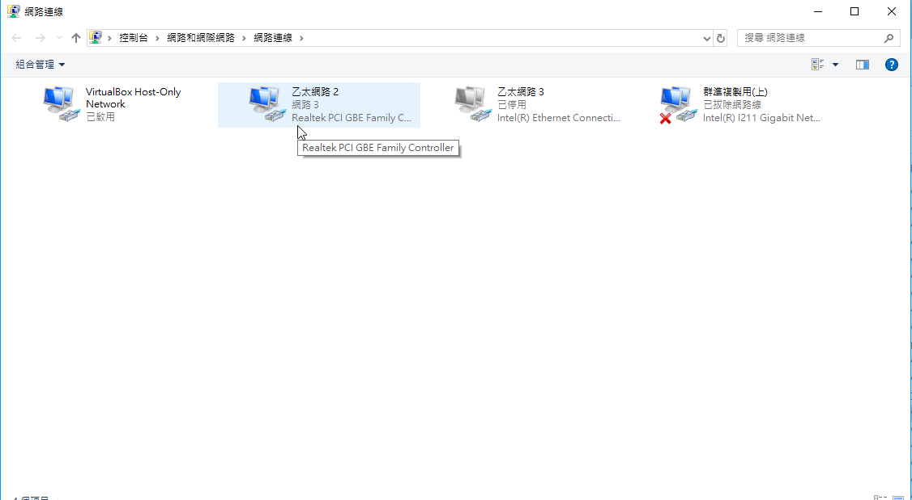
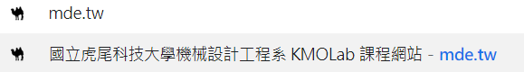
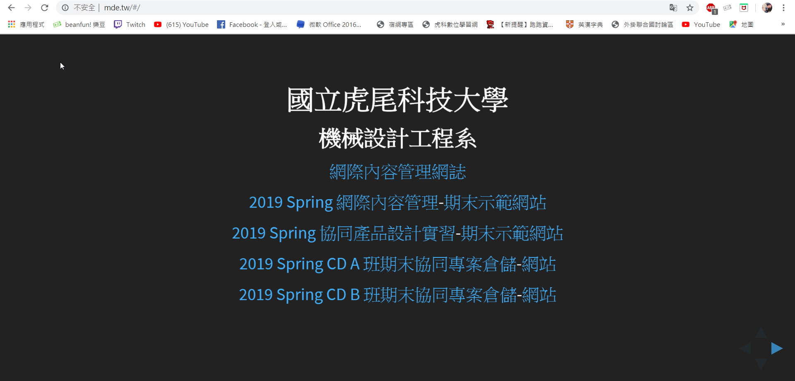
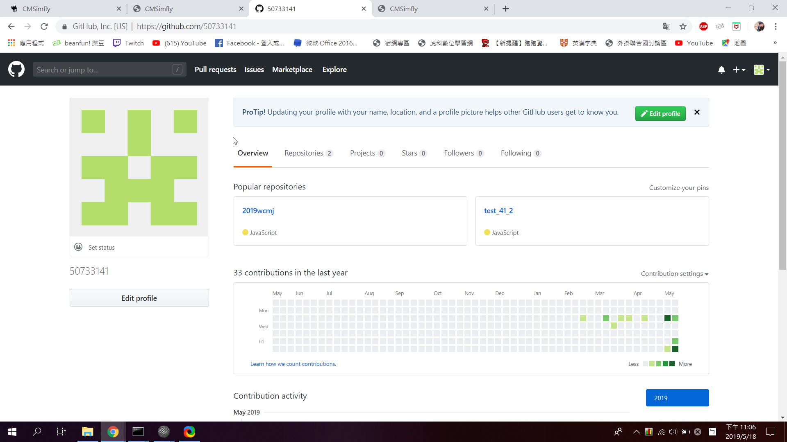
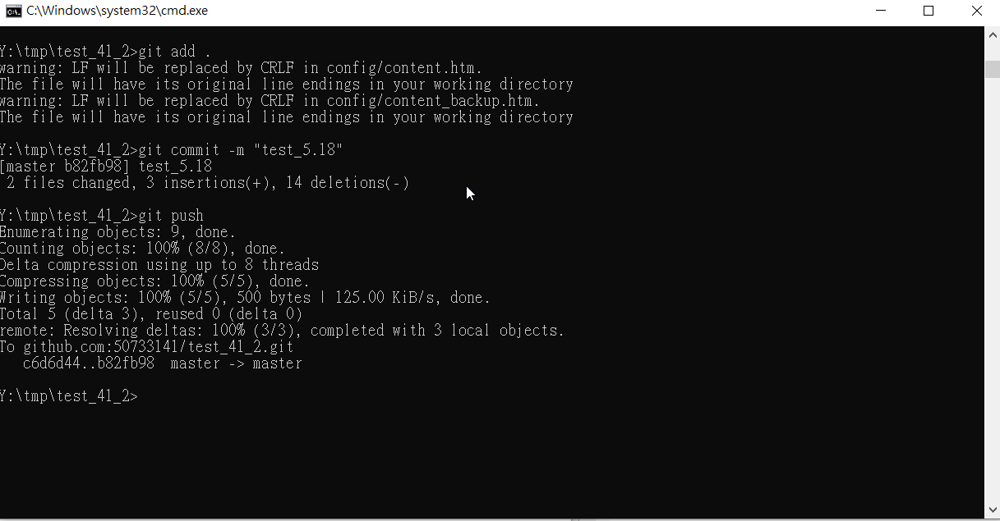
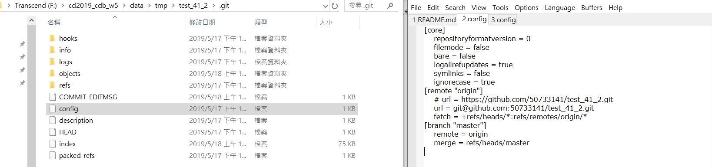

CMSimfly網頁簡介 <<
Previous Next >> 程式
近端配置與管理(網管)
windows network setting(確認當下有連線到網際網路及設定正確)

chrome proxy(開啟網頁後進入設定-開啟proxy設定-輸入伺服器位址及連接埠-進入進階設定將特定網址取消使用proxy)

firefox proxy(開啟網頁後點選上方工具-選項-進階-網路-設定-手動設定proxy-設定完成即可，每次登入時輸入帳號密碼)


mde.tw(網頁搜尋:mde.tw即可登入課程網頁)


github.com(網頁搜尋:github.com-輸入帳號密碼即可登入自己的github)


portable programming system(進入https://2019wcm.blogspot.com/後，右方即可看到2019_cdb_w5.7z及2019_cdb_w13.7z，任一下載後解壓縮即可)


portablegit - remove helper = manager(開啟start-輸入git config --edit --system，即可進入下方圖面的頁面-將 credential 項目中的 helper = manager 刪除後儲存{儲存指令:wq}即可)

login github add repository - README.md(進入github後-點選右方選項your repository-NEW-建立新的倉儲，倉儲姓名及設定好之後即可建立)


git clone self-repo and CMSimfly(輸入指令cd tmp-cd 倉儲名，進入倉儲資料夾之後-輸入 git clone git@github.com:帳號名/倉儲名.git，即可clone自己的倉儲，另外需取得CMSimfly倉儲內容，所以也必須將https://github.com/chiamingyen/cmsimfly的內容copy到自己倉儲)


y:\home\.gitconfig(輸入指令git config --global user.name""、git config --global user.email""、git config --global http.proxy)

git config --global user.name "倉儲姓名"
git config --global user.email "倉儲信箱"

git config --global http.proxy http://伺服器網址+連接埠號

git add .、git commit -m ""、git push(這是每次改版後必須輸入的指令，將改版內容commit及push到倉儲更新)
git add .(拍快照)
git commit -m "當次改版標題"(提交改版)
git push(上傳推到網站)

Github Pages - setting, url(進入倉儲內的setting-下滑到Github Pages-將Source第一個選項改為master branch即可)

local python wsgi.py(開啟動態網頁-步驟:cd tmp-cd 倉儲名-python wsgi.py-複製網址並貼上即可進入動態網頁)


ssh vs https (y:\home\.ssh\config)
(在可攜式系統的視窗內以 sh 執行 Git 的 shell, 可透過指令ssh-keygen -t rsa -b 4096 -C "This is my key"建立位於 y:\home\.ssh\id_rsa 的 Private Key 與位於 y:\home\.ssh\id_rsa.pub 的 Public Key，將 id_rsa.pub 的內容, 轉貼到 Github 帳號 settings 中 SSH and GPG keys 項目內的 SSH Public Key 區-使用ssh 協定執行 git clone，ex:git clone git@github.com:50733141/test_41_2.git，即可使用ssh協定進行連線)
(利用ssh協定連線後，之後改版配合 ungit 使用時, 可以直接輸入提交訊息後, 以 commit & push 將近端版本提交推送到遠端)

.git/config (url = git@github.com:50733141/test_41_2.git)
(在url選項後面顯示的項目，可設定要利用http或是ssh連線)

CMSimfly網頁簡介 <<
Previous Next >> 程式